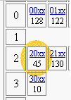
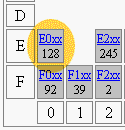
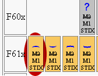

MathML Character Table
The tables presented here show the total list of assignments made by
the
MathML 1.x specification (187K),
the
MathML 2.0 WD (133K),
the
STIX project (521K),
as well as the 'secret' assignments made by the Mozilla MathML project
to the PUA from within the ucvmath module. Plane 1 characters
listed in MathML 2.0 are not included. The tables were generated
by software, and the 'shortcuts' used in the MathML 2.0 WD
were skipped during processing (codes of the form 0xNNNN-0xNNNN).
Master Table
The
master table
is the table in which each cell indicates a Unicode range
of the form NNxx.
|
|

|
- If there are assignments in a range,
then the corresponding cell shows the number of assignments in
that range.
- Clicking the range leads to a sub-table with
detailed information about the assignments in that range.
|
|
|

|
-
For assignments to the PUA (U+E000-U+F8FF), the background is
grayed.
|
Sub Tables
The sub-table corresponding to a Unicode range NNxx gives
the full list of assignments made in that range.
|
|

|
- Characters that cannot be represented with the current fonts
on your system are indicated with a question mark '?'.
- Assignments to the PUA are grayed, with the assignments
of Mozilla's ucvmath module itself indicated by an orange
background.
- If the Unicode point is not part of a list, then the list is
struck
(M1 stands for MathML 1.x, M2 stands for MathML 2.0, and STIX stands
for the STIX project).
|
|

|
- Placing the mouse over a glyph, the status bar shows
the Unicode associated to the glyph and the various names under which the
character is known.
- Clicking the glyph will pop up a window with further details
about the character.
|
Roger B. Sidje
rbs@maths.uq.edu.au